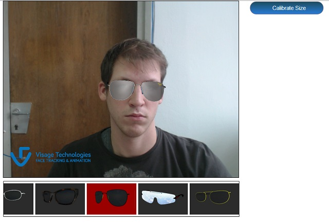

Virtual Eyewear Try-on sample project
Virtual Eyewear Try-on sample uses the VisageAR API to implement a simple augmented reality application for virtual try-on of eyeglasses.
Installing and running the project
The project must be installed on a web server in order to run (it can not run from a local disk). For a quick trial from Visage Technologies web server, click
here.
To install the application on your own web server, upload folders lib and Samples to your web server. To run the application access the Samples/FaceTracker/sampleTracker.html page via a web browser.
Application will give licensing warning and will be limited to one minute. To remove this limitation:
- Contact your Visage Technologies contact person in order to obtain a license key.
- Copy the obtained license key file into your application folder (e.g. samples/VirtualEyewearTryOn).
- Edit lib/visageAR.js. Uncomment the line Module.initializeLicenseManager("...") and replace the "xxx...xxx.vlc" with the name of your license key file.
For further information please read licensing section of the documentation.
Using the sample application
- Running the sample requires a recent browser (tested on Firefox 45 and Chrome 49).
- The SDK needs to download its data files before using the application.
- Allow the site to access your camera by choosing "Allow" in the browser's pop-up bar.
- Look straight at the camera and glasses will appear.

- Other glasses models are chosen using the choice bar.
- Enter inter-pupillary distance in millimetres and press "Change IPD" to influence the tracker z axis translation and
calibrate the size of the glasses, so they appear in real-life size with respect
to your face.
Implementation overview
Virtual Eyewear Try-on is implemented in HTML and JavaScript using the
VisageAR API for rendering and face tracking.
For information on preparing models for use with VisageAR see the AR modelling guide.